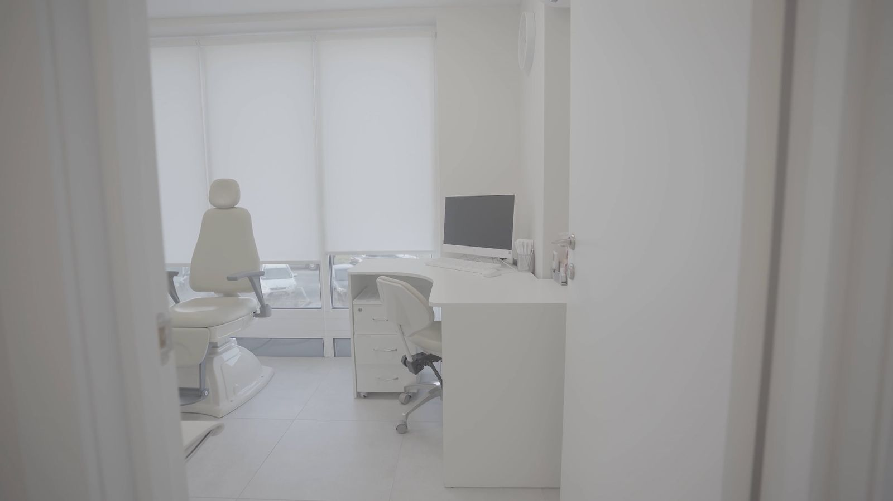
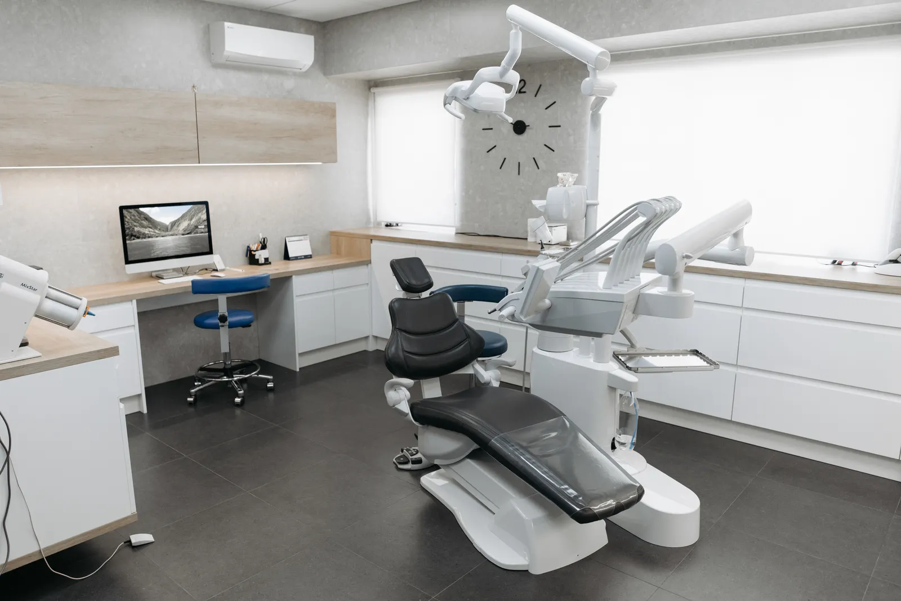
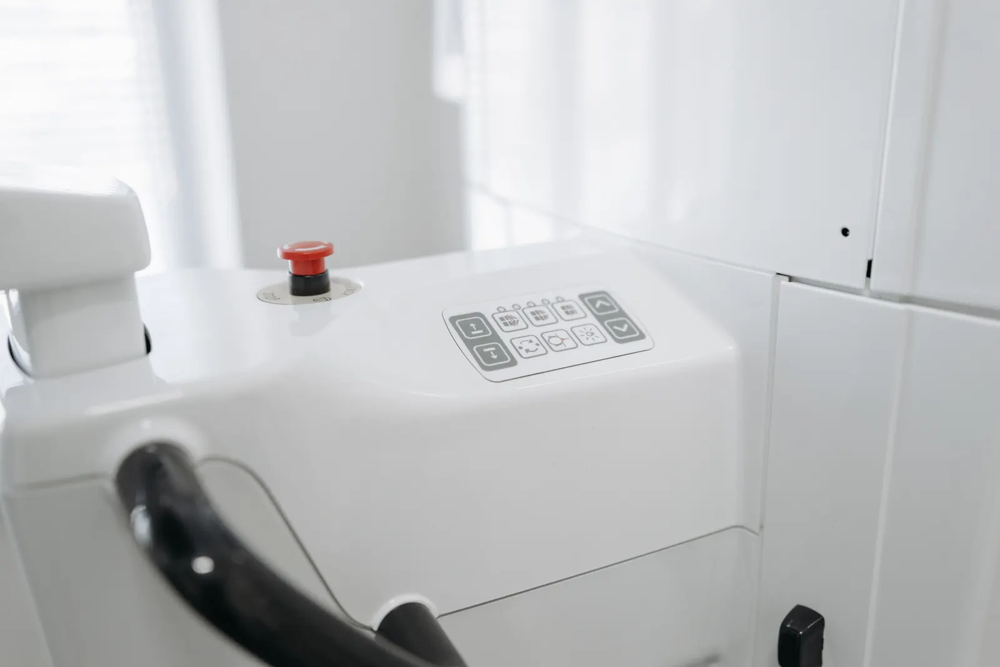
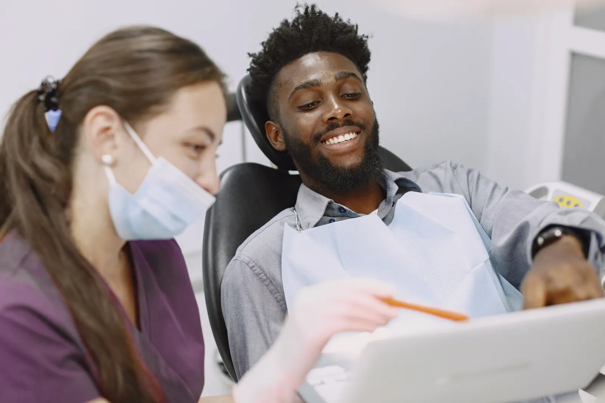
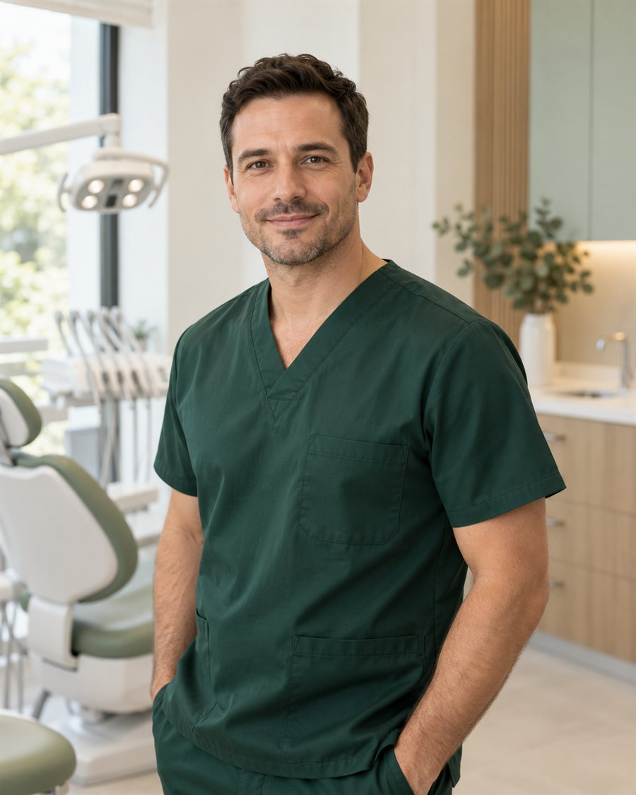
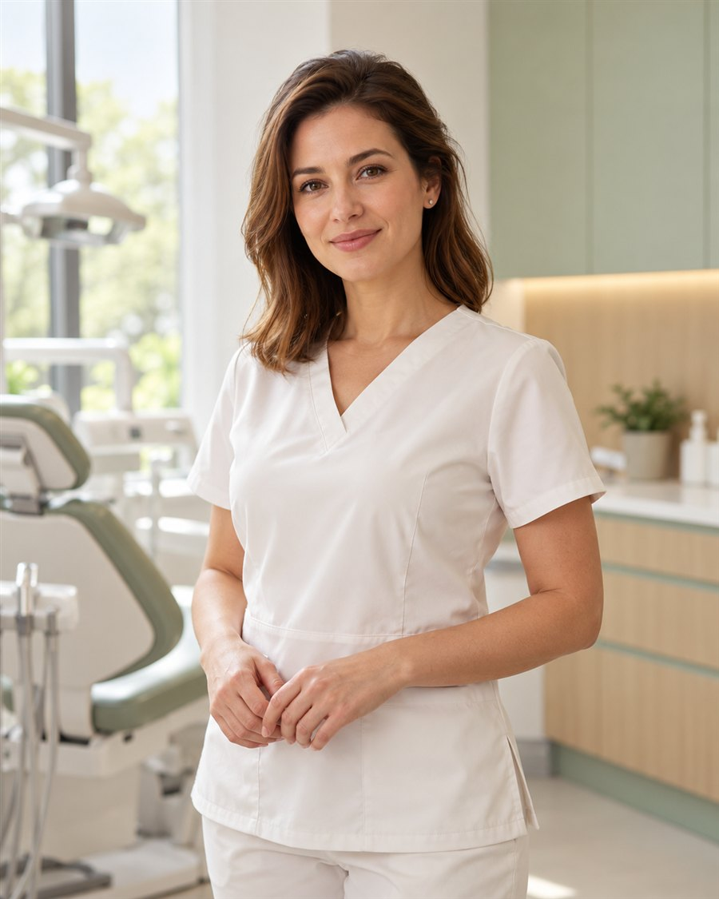
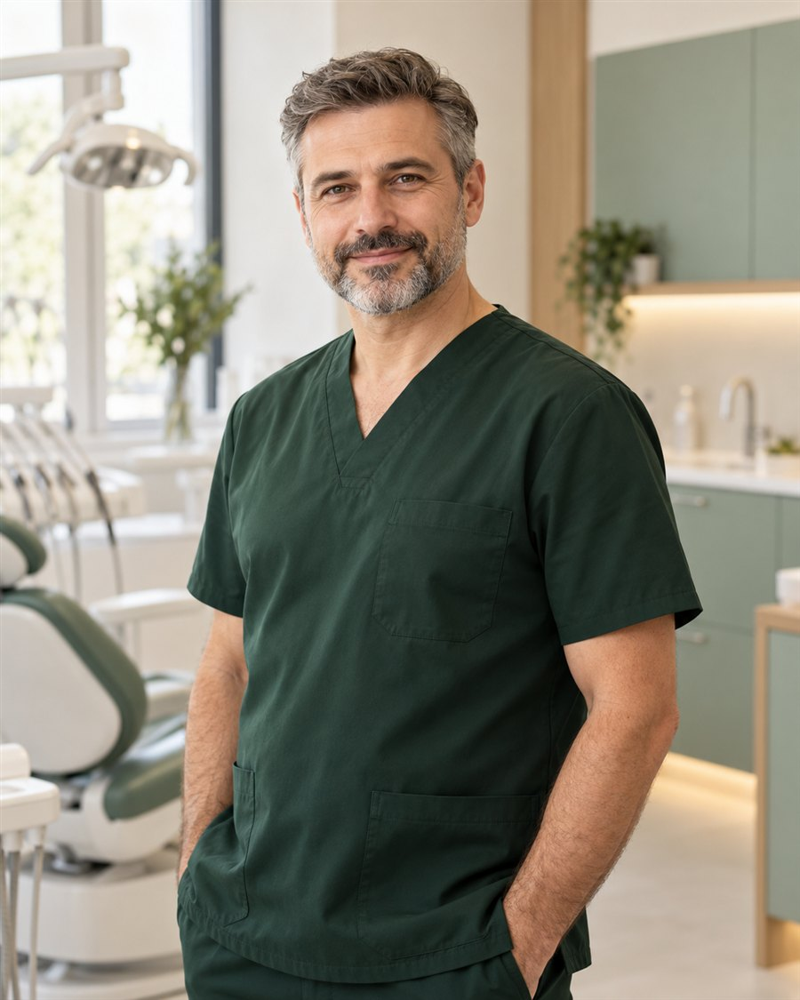

Atenție la confort
Timp pentru acomodare și grijă pentru felul în care te simți.

VELORA DENTAL · BRAȘOV
Îngrijire dentară atentă, explicații clare și un spațiu în care confortul tău contează.
Timp pentru acomodare și grijă pentru felul în care te simți.
Îți prezentăm opțiunile și răspundem întrebărilor tale.
Pași aleși împreună, în funcție de nevoile tale.


BINE AI VENIT LA VELORA
Credem în lucrurile făcute cu atenție. În timpul acordat unei întrebări. În explicația care aduce liniște. Într-un mediu în care poți să te simți în largul tău.
La VELORA, îngrijirea începe cu tine — cu povestea, nevoile și ritmul tău.
Descoperă clinicaÎNGRIJIREA DE CARE AI NEVOIE

ÎMPREUNĂ, CU ÎNCREDERE
OAMENII VELORA

Stomatologie generală

Ortodonție

Implantologie
PRIMA TA VIZITĂ
Ne spui ce te aduce la noi și ce îți dorești de la îngrijirea dentară.
Îți explicăm observațiile și variantele care pot fi luate în considerare.
Alegem împreună un parcurs potrivit, cu timp pentru întrebări.
E BINE SĂ ȘTII
Poți aduce documente și investigații dentare recente, dacă le ai. Gândește-te la întrebările tale și la aspectele despre care ai vrea să discutăm.
Găsești datele clinicii și zona de contact în pagina Contact. O programare se stabilește printr-o discuție și se confirmă separat.
Pagina Servicii include o listă de tarife orientative. Costul final depinde de evaluare și de particularitățile îngrijirii propuse.
O consultație inițială poate fi punctul de plecare. Discutăm nevoile tale și îți explicăm ce opțiuni pot fi potrivite.
UN PAS CĂTRE MAI MULTĂ GRIJĂ